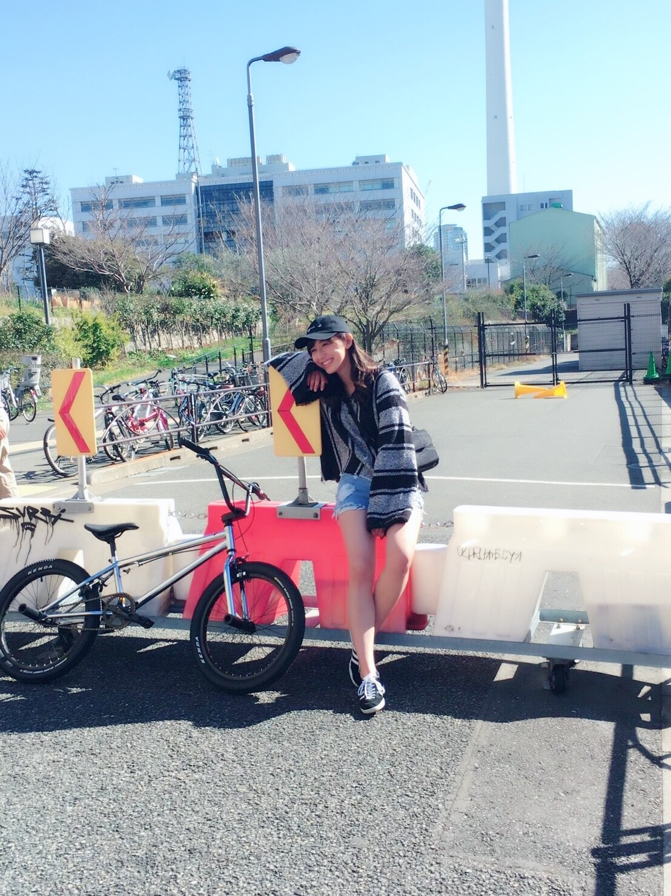
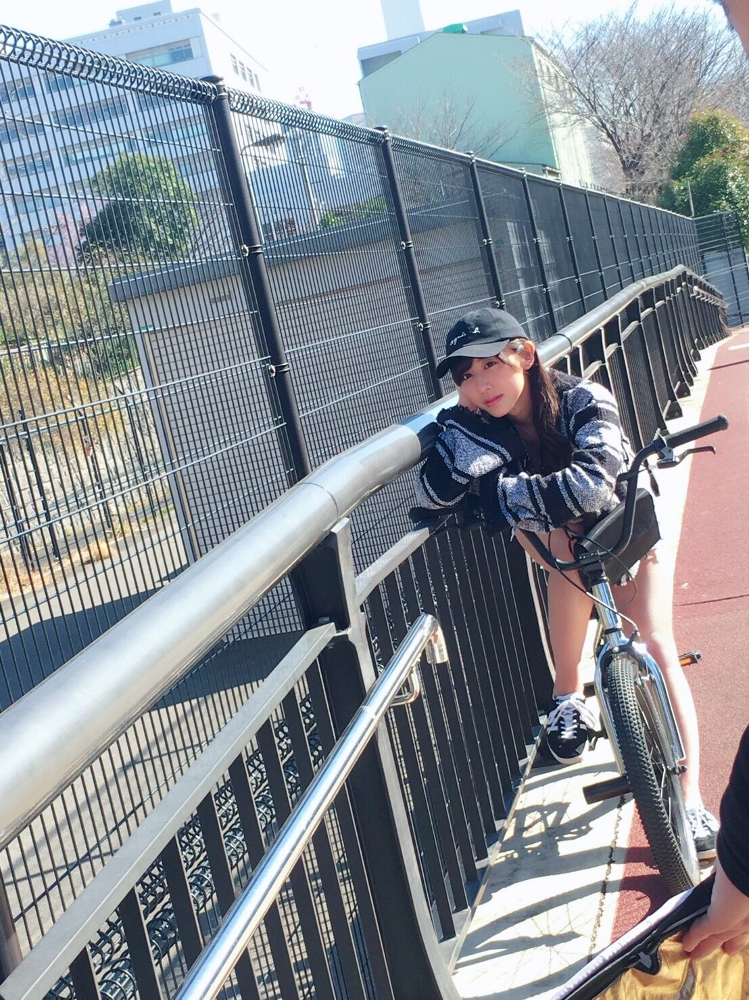
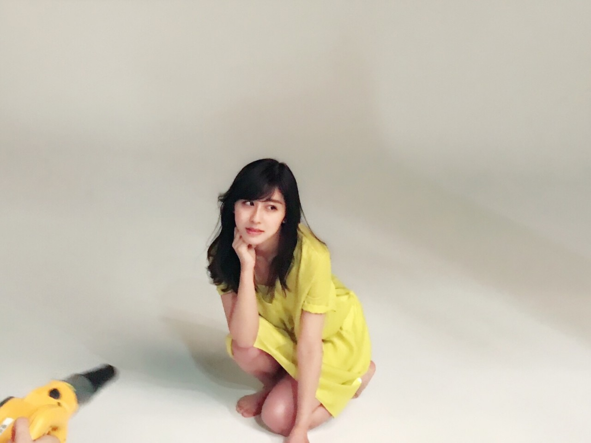
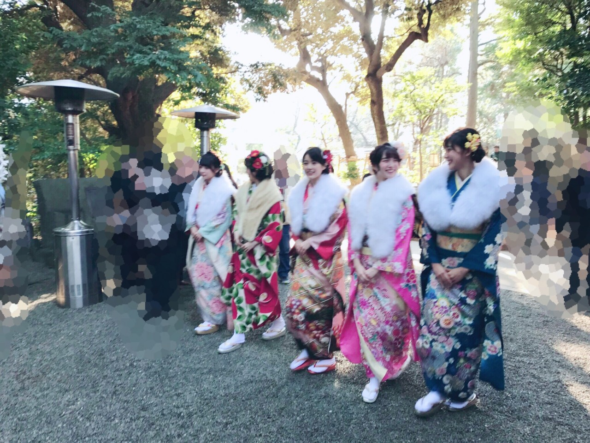

| 2017/02 24 Fri | 斎藤ちはる いつもの自分とは |
ちはるーむへようこそ
新刊の雑誌が出版されるこの時期が
私は大好きです！
今年の春服はどんなのだろう？とか
誰が表紙を飾ってどんなメイクをしているのだろう？とか
色々勉強になるし、読んでいて楽しいんです◎
よく読んでいるのは
「JJ」さん、「ar」さん、「ViVi」さん、「CanCam」さん、「Ray」さんなど☺︎
小・中学生の頃から雑誌は読み続けてるな〜
そして私が出ている雑誌
「Samurai ELO」さん、
「BRODY」さん、
「FLASHスペシャル」さん、
3冊とも発売されました！！
「Samurai ELO」さん
馬場ふみかさん表紙の4月号◎
馬場ふみかさん可愛すぎる...惚れた...
私を見つけるには
裏表紙から開いた方が早いかなっ
春のようなあったかい日に
外での撮影でした！


いつもの自分とは少し違う雰囲気だけど
こういう服も好きかも♡って思えた日でした！
「BRODY」さん
美彩が表紙の4月号◎
乃木坂46バースデースペシャルという事で
色々なメンバーが載っています！
私は「それぞれの色」がテーマの撮影。
以前ブログで何色でしょうか？
と問題を出しましたが...
私は黄色でした！！

黄色って私からしたら珍しいけど
着てみたら意外としっくりきました
明るい色って着ているだけで
楽しい気分になれるから好きです。
「FLASHスペシャル」さん
なーちゃん、玲香、生駒が表紙の早春特大号。
乃木神社での成人式での撮影&取材でした！
私たち5人の晴れ着とインタビューが載っています◎

是非是非チェックしてみてください\( ˆ ˆ )/
------------------------------------------------♡
♬ ChihaMusic
「もう少しの夢」乃木坂46
なーちゃんのソロ曲は沢山あるけど
全部、凄い良くて好き。
切ない感じの曲ががなーちゃんの
雰囲気と声にぴったり。
"それがどんなに遠い場所でも
この手 伸ばして諦めない"
この曲辛い時に聞いたら
また頑張ろうって気持ちになれる、
素敵な応援ソングだと思う。
夢がある皆さんはこの曲聞くべき。
まだBirthday LIVEの余韻が...
乃木坂の曲が聞きたくなっちゃう。笑
読書したいな。
漫画読みたいな。
散歩したいな。
春服が着たいな。
サンダルが履きたいな。
映画を観たいな。
素敵なカフェに行きたいな。
したい事が沢山ある(﹡ˆ ˆ﹡)
おやすみ
斎藤ちはる